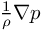
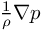

Simulate with complex geometries and complex physics
PorousBlock
Local flow resistance due to block of porous material
Starting point
As a starting point, let us consider the simple channel flow from tut3d_01 but with an extended channel. Clearly, this results in the following velocity field:
Introducing local flow resistance
In a wide range of applications the fluid is not moving as freely as in the above example. Local flow resistance may be caused by suspended particles of another phase or by a contiguous porous medium, such as filters. To understand how we can introduce such a flow resistance into the above channel flow, let us assume that a single block of porous material is present within the flow geometry. One way to define this by means of UCV functionalities is through an indicator function:
begin_equation{$BlockIndicator$}
(Y%ind_x(1)%>-0.25)*(Y%ind_x(1)%<0.25)*(Y%ind_x(2)%>-0.35)*(Y%ind_x(2)%<0.35)*(Y%ind_x(3)%>-0.35)*(Y%ind_x(3)%<0.35)
end_equation
DarcyBasisVelocity($MatUSER$) = ( 0.0, 0.0, 0.0)
DarcyConstant($MatUSER$) = ( [&cDarcy&*equn{$BlockIndicator$}] )
 denotes the velocity of the porous material, which we specified above as DarcyBasisVelocity. Note that DarcyConstant actually defines a constant
denotes the velocity of the porous material, which we specified above as DarcyBasisVelocity. Note that DarcyConstant actually defines a constant  which is related to
which is related to  via
via  . This steams from the classical formulation of Darcys law
and the fact that we have  on the left-hand side of the momentum equation in EquationsToSolve.
. This steams from the classical formulation of Darcys law
and the fact that we have  on the left-hand side of the momentum equation in EquationsToSolve.
Simulation results
The image below shows the decrease in fluid velocity due to local flow resistance and further visualizes how the the fluid is accelerated towards the side walls in order to maintain the total mass flow rate:
Representing anisotropic materials
Refer to PorousBlockAnisotropic for the treatment of anisotropic materials.| List of members: | |
|---|---|
| USER_common_variables | Local flow resistance due to block of porous material: USER_common_variables.dat |
| common_variables | Local flow resistance due to block of porous material: common_variables.dat |